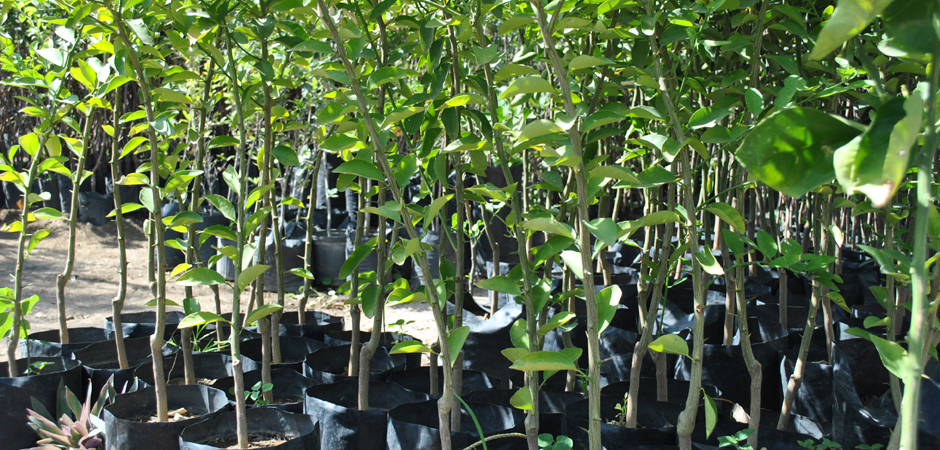

Cuidados
En general, para las plantas se necesitan los siguientes cuidados:
- Se deben regar (de preferencia por la noche, para que las plantas aprovechen toda esta agua) todos los días.
- Deben estar libres de hojas secas.
- Se debe cuidar que no tengan plaga.
- -Podarla de vez en cuando para que la planta se vuelva más fuerte y tupida.
- Quitar las malezas que crecen a su alrededor
- Tener el sol necesario
- Cuidarlas continuamente.
No recomendamos utilizar agroquímicos, puesto que estos son peligrosos para el ser humano, además que produce un desequilibrio en el pH de la tierra.
Árboles Frutales
Estos árboles no son tan delicados, sin embargo si necesitan mucha agua, espacio y sol.
Además, los árboles de sombra y frutales tardan varios años en crecer, y estos árboles, tardan un tiempo en dar frutos.
En caso de tener estas plantas en casa, se recomienda estar más al pendiente en el aspecto de las plagas, ya que muchas de estas plantas producen gusanos, orugas (no se deben tocar, porque estás producen calentura), cochinilla blanca, hormigas, gusanos cabezudos, moscas de la fruta, etc.
Si se llega a observar alguna de estas plagas en el árbol, puedes pulverizar un poco de jabón, verterlo en agua y revolver hasta disolver, después rocías las plantas con esta mezcla hasta notar cambios.
Árboles de guayaba.

Árboles de mandarina.
Árboles de limón.
Árboles de Sombra
Este tipo de árboles no requieren de tantos cuidados como los árboles frutales y las flores, y estas, no necesitan de tanta agua como se piensa muchas veces, además que crecen rápido.
Se recomienda más utilizar pesticidas caseros, puesto que, a la larga, los pesticidas comerciales pueden perjudicar a estas plantas. Otro pesticida casero, es el ajo. Licúa una cabeza de ajo con algunos clavos (especies), junto con dos vasos de agua hasta conseguir una mezcla homogénea, la dejas reposar un día entero y añades 3 litros de agua más, y la puedes rociar directamente a la planta.
Palmeras. Las palmeras o palmas son plantas leñosas con el tronco recto y grandes hojas en corona al final del tallo.
Jacarandas. Florece dos veces al año: primavera y otoño. Los frutos de la jacaranda tienen forma de cartuchos.
Ficus. Posee un aspecto característico, ya que sus ramas se desarrollan de forma desordenada. Soporta las podas, por ello, se presta muy bien como planta ornamental.
Flores
Este tipo de plantas son muy delicadas, por lo que se deben estar cuidando más. Algunas de estas, producen pulgones, babosas, caracoles, palomillas, ácaros, etc.
Para combatir con estas plagas/insectos sin afectar de manera negativa a la planta, puedes utilizar el cilantro, un pesticida casero.
Este ayuda a acabar con los ácaros. Para preparar esta mezcla, solo debes hervir el cilantro durante 10 minutos, cuelas la mezcla y lo rocías en la planta que deseas. O de igual forma, puedes utilizar aceite vegetal.
Solo necesitas 2 tazas de aceite vegetal y ½ taza de jabón líquido puro. Lo debes agitar hasta que se forme una mezcla blanca, lo diluyes en agua y rocías.
Claveles.
Crisantemos.
Hortensias.
Jacintos.
Orquídeas.
Rosas.
Tulipanes.
Narcisos.